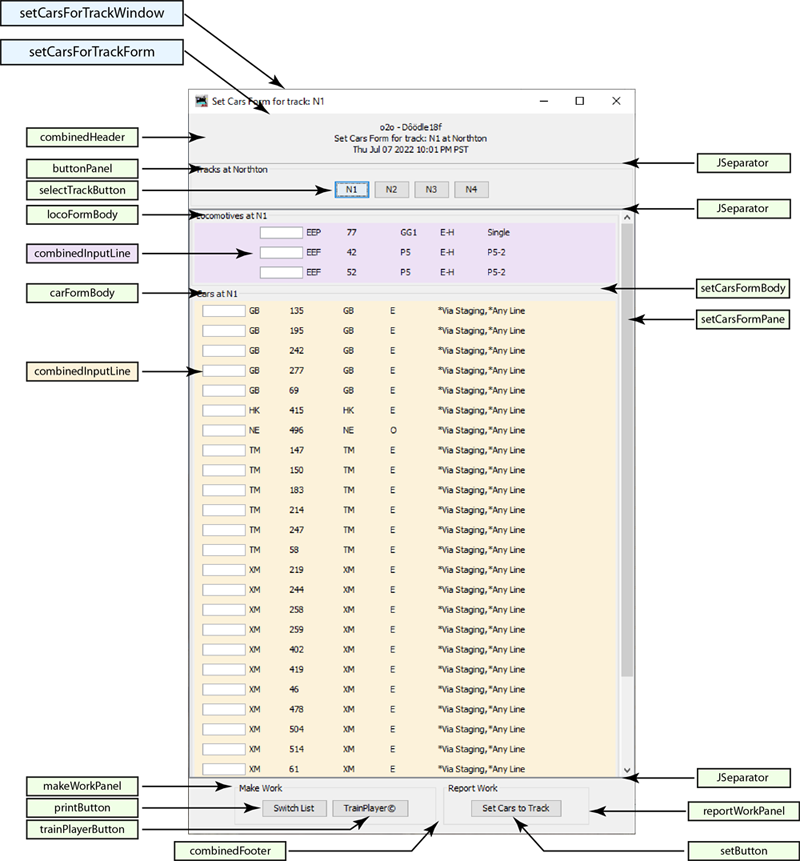
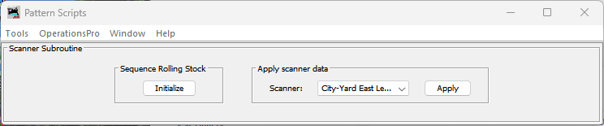

The Pattern Scripts plugin for JMRI is a suite of subroutines for JMRI Operations Pro. The use of this plugin is documented in the following list of YouTube videos. The videos are recorded in the English language.
How to add this plugin to JMRI
The o2o subroutine - Use JMRI with TrainPlayer© model railroad software
The Patterns subroutine - Overview
The Patterns subroutine - Demonstration at industry
The Patterns subroutine - Demonstration at a yard
The Throwback subroutine - Run what-if scenarios with convenient return-to points
The Pattern Scripts plugin can be thought of as a framework for hosting subroutines (or scripts) for JMRI Operations Pro that require a user interface. This plugin comes with four subroutines; jPlus, Patterns, o2o and Throwback. A template is also included to serve as scaffolding for someone wishing to add their own subroutine.
Subroutines may be added or removed individually as needed.
Additionally, each subroutine can be shown or hidden as needed, fron the Tools menu pulldown.
Each of the subroutines' features are only available when the plugin is running and the subroutine has been included. For example, extended railroad details will only appear in reports when the Pattern Scripts plugin has been started, and jPlus has been included. To deactivate the plugins features, close (not hide) the Pattern Scripts Swindow.
This plugin can generate four types of reports:
1. Train List. When activated, building a train will generate an OPS train list, detailing the cars on train for each location along the train's route.
2. Work Order. When activated, a work order will be generated for a train when built. The WO details tasks scheduled for each location along the trains route.
3. Pattern Report. When using the Patterns subroutine, a pattern report for a location will detail inventory data for selected tracks.
4. Switch List. When using the Patterns subroutine, a switch list can be generated for any track. Switch crews would use these lists to perform their duties.
To activate or deactivate the train list and work order, select Tools - Extended Reports on or off.
Note: The train list and work order can be thought of as alternative interpretations of JMRI manifest and switch list, with the train list substituting for the manifest and the work order substituting for the JMRI switch list. Both reports are built from a JMRI created manifest json file.
All the OPS reports are built from json files. The json created by this plugin follow the data structure of the JMRI manifest json.
To the extent possible, the CSV generated by this plugin follows JMRI CSV formatting.
The following chart shows the code structure of this plugin.

OperationsPatternScripts.MainScript.View.makePatternScriptsWindow()

Each JMRI profile gets its own configuration file, which is named configFile.json. It is found in the operations folder, and is used to provide custom settings for each profile and record user inputs.
Select Tools/Edit Config File. The values that are user editable are in subsections labeled "US" for User Settings. Other values should not be edited. If a mistake is made editing the configFile, the plugin will delete the file and provide a new one to start over using default values. Worst case, the plugin may crash. If that should happed select Tools/Restart From Default.
The following are user editable values for the plugin.
For colors, any of the A, B, G, R values can be changed, between 0 and 255.
Also, new colors may be added.
"US" : {
"OPR" : "pattern report ({}).{}", OPS Pattern Report file name.
"OSL" : "switch list ({}).{}", OPS Switch List file name.
"OTL" : "train list ({}).{}", OPS Train List file name.
"OWO" : "work order ({}).{}", OPS Work Order file name.
"HCP" : " [ ] Hold", Hold car prefix.
"AW": { Attribute Width. In any OPS report, the number of characters alloted to each attribute.
" ": 1,
"Color": 6,
"Comment": 15,
"Consist": 8,
"DCC_Address": 10,
"Destination": 15,
"Dest&Track": 27,
"FD&Track": 23,
"Division": 15,
"Final_Dest": 11,
"Hazardous": 10,
"Kernel": 7,
"Kernel_Size": 3,
"Length": 3,
"Load": 12,
"Load_Type": 1,
"Location": 9,
"Number": 5,
"Model": 5,
"Owner": 20,
"PickUp_Msg": 12,
"RWE": 10,
"RWL": 10,
"Road": 4,
"SetOut_Msg": 12,
"Track": 12,
"Type": 3,
"Weight": 7
},
"OC" : true, Open Console. Opens the system console when the plugin starts.
"OT" : false, Open Trains window when plugin starts. (Not being used)
"CD": { Color Definitions, a set of predefined colors.
"BLANCH": { The name of the color.
"A": 210, The alpha (transparency) value.
"B": 255, The blue component value.
"D": "Lighten a bit", A description of the color.
"G": 255, The green component value.
"R": 255 The red component value.
},
"GLOOM": {
"A": 10,
"B": 0,
"D": "Darken a bit",
"G": 0,
"R": 0
},
"DUST": {
"A": 255,
"B": 218,
"D": "Light tan",
"G": 242,
"R": 252
},
"FADED": {
"A": 255,
"B": 245,
"D": "Light purple",
"G": 225,
"R": 237
},
"LICHEN": {
"A": 255,
"B": 244,
"D": "Light green",
"G": 255,
"R": 236
},
"PALE": {
"A": 255,
"B": 250,
"D": "Light blue",
"G": 243,
"R": 237
},
"RASH": {
"A": 255,
"B": 224,
"D": "Light red",
"G": 208,
"R": 240
},
"colorA" : "DUST", The name of the color to be used when colorA is called.
"colorB" : "FADED", The name of the color to be used when colorB is called.
"colorC" : "RASH" The name of the color to be used when colorC is called.
}
},
The jPlus subroutine adds extended railroad detail to reports generated by this plugin. This detail is displayed as the header any OPS report. The header for the JMRI server is not changed.
To use this subroutine. enter the appropriate data into the text box and click update. Not all fields need to be entered.
This is railroad that owns or operates the tracks being modeled. Any name can be entered such as 'PRR' or 'BN UPRR Joint' or 'G&D'.
This is the railroad's name for the part being modeled, such as 'Long Beach Intermodal Terminal' or 'Salem Glass Works Branch'.
Where the the railroad is located, such as 'The Great Divide' or 'The Bronx, New York'.
Which year the model railroad is based on, this is a mirror of 'JMRI/OperationsPro/Settings/Year Modeled'. Either updates the other.
Pressing the Update button stores the values entered into the text boxes in the configuration file.
Checking this box will include the extended header information in any of the OPS reports.
Subroutines.jPlus.View.ManageGui

The jPlus section of the configuration file has no user editable settings.
The ops to ops (o2o) subroutine is a group of utilities that are designed to be the glue that allows JMRI Operations Pro to be the operations engine for TrainPlayer©. The idea is to expand the capability of TrainPlayer©'s Advanced Ops feature to include the flexibility of Operations Pro, while also eleminating the tedium of keeping two data sets synchronised.
o2o will automatically export a built train or switchlist to TrainPlayer when the Pattern Scripts window is open and the o2o subroutine is included. To disable o2o export, Remove o2o from the Pattern Scripts window or close (not hide) the Pattern Scripts window.
Before any of these buttons are pressed, export your layout from TrainPlayer. The QuickKeys for TrainPlayer subroutines have to be added to TrainPlayer before your TrainPlayer layout can be exported. Refer to the Quick Keys documentation.
Pressing this button initializes the Locations, Cars, and Engines data sets so a new JMRI railroad can be built from the TrainPlayer export. The Routes and Trains XML files are backed up.
Pressing this button builds a whole new JMRI railroad from the TrainPlayer export data. If you are using jPlus, the extended data you entered into the TrainPlayer layout will be added.
Additionally, when making any subsequent changes to the Locations panel of TrainPlayer's Advanced Ops window, re-export your TrainPlayer layout and press this button to update your JMRI data.
Pressing Import Locations also imports/updates Industries and Cars.
Press this button when you have made changes to TrainPlayers Advanced Ops Industries panel, This will update your spurs and their schedules. Any changes you have made to your rolling stock are also updated.
Pressing Import Industries also imports/updates Cars.
Press this button when you have made changes to the rolling stock on your TrainPlayer layout.
Pressing this button will add the extended railroad details entered into the TrainPlayer Quick Keys Personalized Settings into jPlus. This is optional.
One of the primary purposes of o2o is to eliminate duplication between your TrainPlayer and JMRI layouts. As much as possible, layout maintenance is done on your TrainPlayer layout and the changes are then pushed to your JMRI layout.
The table below shows which program manages which elements of your layout.

Use TrainPlayer to manage Layout Details, Cars, Engines, Schedules, and Locations.
Use TrainPlayer to define Divisions and Tracks, and use JMRI to implement the details.
Use JMRI to manage all aspects of Routes and Trains.
As your JMRI layout becomes more nuanced, data set management will by necessity become increasingly shared (but not duplicated) between the two programs.
Subroutines.o2o.View.ManageGui

The o2o section of the configuration file has the following user editable settings.
The TrainPlayer car code lists are grouped by types of equipment, based on default TrainPlayer values.
Any car code not listed is considered a manifest freight car.
Custom car codes added to TrainPlayer would also be added here.
"US" : {
"XE" : [ List of TrainPlayer car codes for engines.
"E",
"ES",
"ED",
"EE",
"ET"
],
"XP" : [ List of TrainPlayer car codes for passenger cars.
"EP",
"CA",
"CS",
"D",
"DA",
"DB",
"DC",
"DL",
"DO",
"DP",
"DPA",
"P",
"PA",
"PAS",
"PB",
"PBC",
"PBO",
"PC",
"PL",
"PO",
"PS",
"PSA"
],
"XX" : [ List of TrainPlayer car codes for baggage mail cars.
"B",
"BE",
"BH",
"BM",
"BMR",
"BMT",
"BP",
"BR",
"BX",
"MA",
"MB",
"MR"
],
"XC" : [ List of TrainPlayer car codes for cabeese.
"N",
"NM",
"NE"
],
"XM" : [ List of TrainPlayer car codes for MOW equipment.
"M",
"MWB",
"MWC",
"MWD",
"MWG",
"MWF",
"MWK",
"MWR",
"MWX"
]
},
The Patterns subroutine can generate pattern reports for tracks at a single location. Additionally, cars can be moved from track to track within a location. Optionally, if a car is moved onto a spur, the schedule for that spur can be applied.
If you are using divisions, the Division drop down will display a list of divisions. Selecting a division will load a list of locations for that division into the Location drop down.
With a location selected, a list of check boxes will display, one for each track at the selected location.
The list of tracks can be filtered by clicking the 'Spur Tracks Only' check box on or off.
Individual tracks can be selected by clicking the check box next to the track name.
With tracks selected, pressing the Pattern Report button will display inventory information (Pattern Report) about the selected tracks. This is printable.
If Tools/Options/Generate CSV Manifest is selected. The Pattern Report will be added to the csvManifests folder as a CSV file.
With tracks selected, pressing the Set Rolling Stock to Track button will pop open one worklist for each track selected.
For each worklist window, a row of buttons, one for each track of the selected location, will display. Pressing one of the track buttons will load the track name into memory.
For any of the rolling stock rows in the Cars At... panel, clicking inside of one of the text boxes will paste the selected track name into the box.
Pressing the + Switch List button will generate a switch list of work for that track. This is printable.
If Tools/Options/Generate CSV Switch List is selected. The switch list will be added to the csvSwitchLists folder as a CSV file.
If o2o is being used, a TrainPlayer work list will also be generated.
Pressing the Set Rolling Stock to Track button will open the Additional Choices pop up.
The pop up adds the option to use a spurs schedule and overide track capacity.
Pressing the Set Cars button will cause the rolling stock in the worklist to be moved to the selected track, subject to type restrictions.
Subroutines.Patterns.View.ManageGui

Subroutines.Patterns.ControllerSetCarsForm.CreatePatternReportGui.makeFrame()
">
The Patterns section of the configuration file has the following user editable settings.
"US" : {
"DS" : "Not Assigned", Destination designator when the field would otherwise be blank.
"DT" : "Not Scheduled", Destination Track designator when the field would otherwise be blank.
"FD" : "Unconsigned", Final Destination designator when the field would otherwise be blank.
"FT" : "No Waybill", Final Destination and Track designator when the field would otherwise be blank.
"EH" : "Available", Extended Handling, special case designator for engine, passenger and caboose.
"SL": { Sort Locomotives
"model":1,
"destination userName":0,
"road":0
},
"SC" : { Sort Cars
"destination userName":0,
"division":0,
"finalDestination userName":1,
"loadType":2,
"road":0
}
For sorting, a zero means the field is not included, a one sorts that field first, a two sorts second, ETC.
Scanner adds car sequence data to the JMRI data cars data set.
This subroutine is currently being prototyped
Subroutines.Template.View.ManageGui
">
"US" : {
"SP" : "" Scanner Path. Path to the scanner files
}
The Throwback Subroutine is modeled on the idea of version control software. Commits are named and saved. In so doing snapshots are taken of the JMRI railroad data sets.
The commit then serves as a setpoint that allows any of the JMRI data sets to be reset to.
Commits are useful for testing 'What if?' ideas, or to simulate an ops session in advance of the actual ops session, or for testing the movement of rolling stock ETC.
This subroutine does not interact with JMRIs Auto Save or Auto Backup feature, they run as configured.
The name of each commit is entered into the text box of the Total Commits frame. Enter the name BEFORE pressing the Add New Commit button.
Presing the Add New Commit button will add a new commit.
Pressing the Delete All Commits brings up a choice to confirm or cancel the commit. Pressing the Confirm button erases all saved commits, so be careful!
In the Action panel, the Previous and Next buttons facilitate scrolling through your collection of commits. The list is ordered by creation date/time.
Select any combination of data sets to be thrown back by clicking its check box.
Pressing the Throwback button sets the selected data sets to the displayed commit.
Subroutines.Throwback.View.ManageGui()

The Throwback section of the configuration file has no user editable settings.